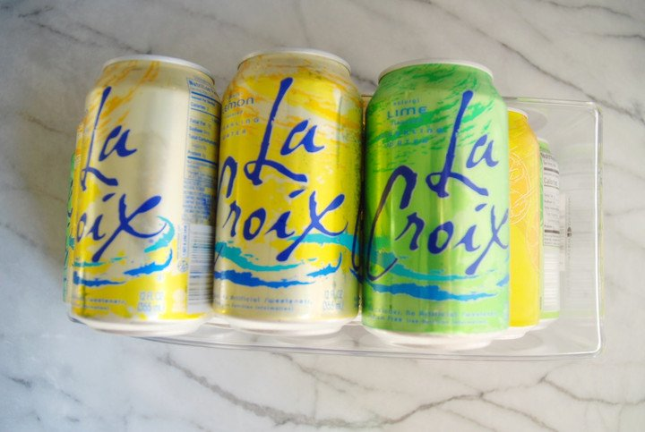
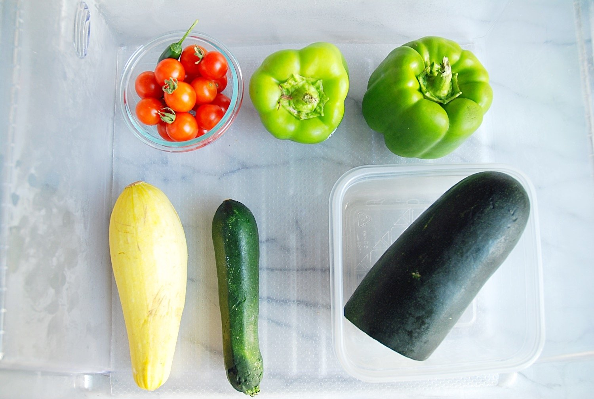
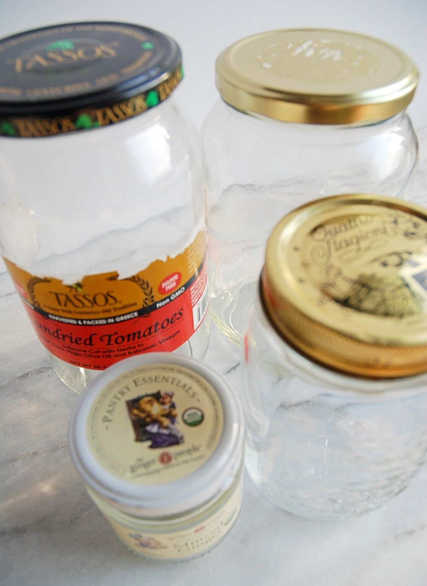
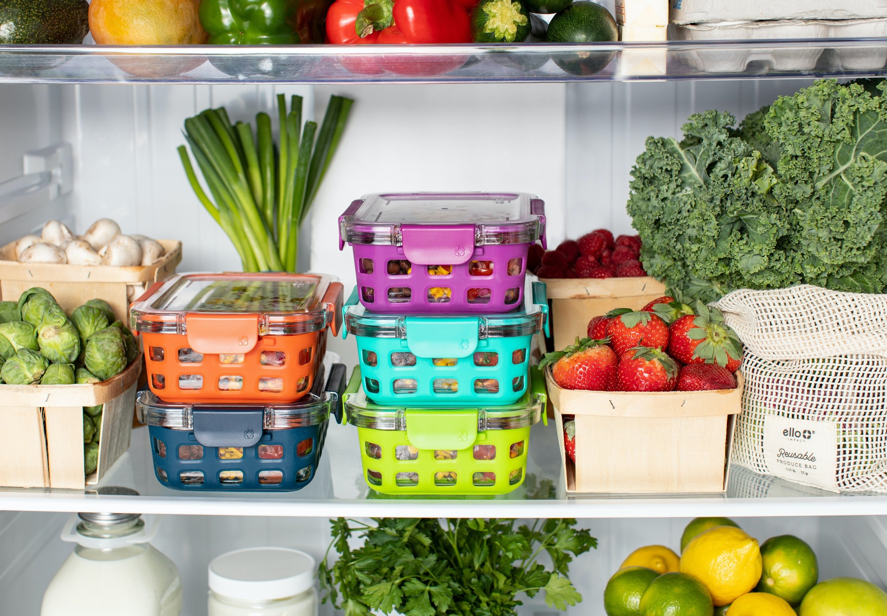
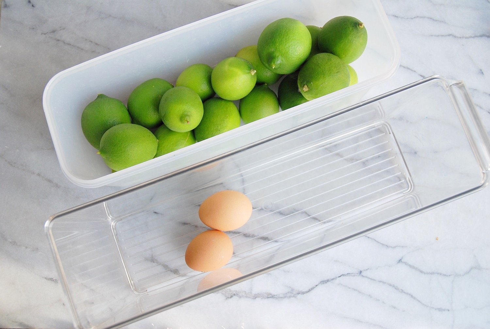

Quick Fixes to an Organized Refrigerator
We all know how our refrigerators can get so cluttered & messy. This can lead to daily frustration & eventually you'll waste food & money. With items crammed on top of one other & food categories (I'll explain later) jumbled together; its hard to maintain a clean and orderly fridge. Well those days are over . . . here are my 4 'quick fixes' that you can implement today for total refrigeration freedom.
1. Quick Purge & Clean
Yes, to start on the right foot with this new habit you have to start fresh! First, clean your fridge. Out with the old & moldy food, toss expired condiments, wipe down shelves & drawers & boom your’e done before you know it! See that wasn’t so bad, now was it?!
2. Your Categories
Now that everything is clean, you have a much better understanding on what you’re working with; but take note of two things. #1. What categories of grocery items do you purchase the most? Is it produce, dairy products, lunch meat, condiments? Well whatever that category is, take note because this will help you identify the appropriate storage containers to repurpose and/or buy. #2. Is there anything in your fridge now that can be stored in the freezer; i.e, extra loaves of bread, large casseroles or soon-to-be bad produce? This will help maximize space and salvage food that would otherwise go bad. This is great for veggies, fruit, sauces soups, just to name a few. Freeze these type of foods that are about to expire, then at a later time use in the crockpot, blend in a smoothie, defrost for a meal or use for baking.
3. My Categories
What are your categories? Personally mine are fruits, vegetables, eggs and drinks . . . (yes, in case your wondering, those “drinks” consist of #LaCroix, the struggle is real people!). For my La Croix addiction, I purchase #InterDesign(see picture on right) products at #TJMaxx, #Homegoods or #Amazon. If I don't want to spend any money, I reuse plastic food containers or glass sauces/salsa jars that I purchase from #Costco to store produce. Be sure to run the jars through the dishwasher a few times to get out the smell and/or oils that may be left behind.





4. Line your Shelves and/or Drawers
Taking the extra few minutes to line your drawers and/or shelves, your preference, but this is worth your time, trust me! Personally I just line my drawers, because its easier to clean & they stay in place better in a drawer than a shelf. I suggest purchasing the non-adhesive, clear plastic Con-Tact paper from Costco.
They are cheaper, larger 18”W; which most stores carry 12”W, plus you get a total of 30ft of it! Don’t under estimate how fast it will go once you start measuring and cutting.
In short, understanding what you commonly purchase & having the right storage options for those “categories” won’t keep anyone in your home guessing. It will be clear where things are & once those containers are empty you know its time to add that to your shopping list. YES, you should always keep a pen and notepad (preferably a magnetic one) on or near your fridge, so you can quickly jot down what you need verses trying to take inventory all at once before you head to the store.
Follow me on Instagram and Facebook @balancehomeorganizing.